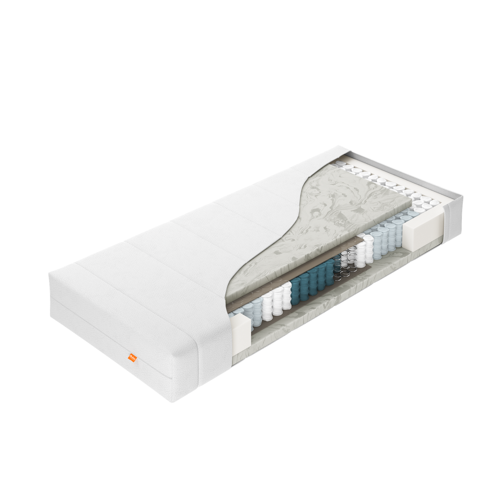
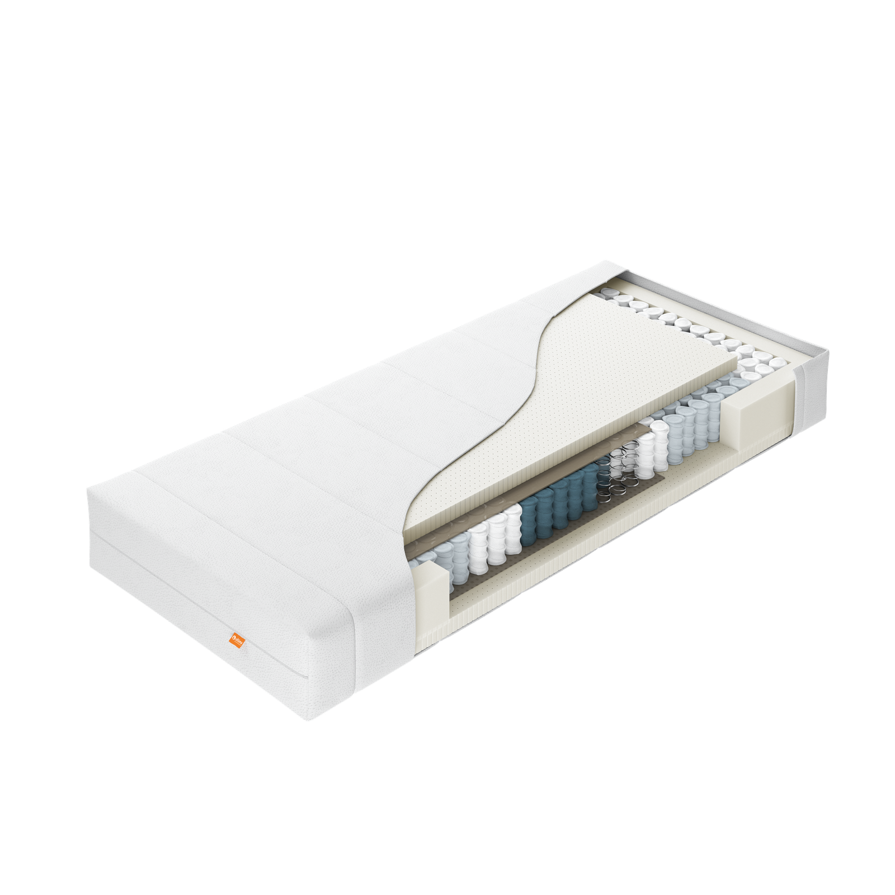

Matrassen — Initio
Initio: twee modellen, dezelfde basis.
PE10 en PL20 delen exact dezelfde opbouw — één verschil bepaalt het verschil in ligcomfort: de boven- en onderlaag van 4 cm. Ontdek welk model bij jou past.
01 — Initio PE10
Energyfoam comfort, in een keerbare opbouw.
Initio PE10 combineert een 7-zone pocketveringkern met een boven- en onderlaag van 4 cm Energyfoam — een schuimsoort die zich soepel aan het lichaam aanpast. Een juten drukverdeler zorgt voor een gelijkmatige drukverdeling. Omdat beide zijden gelijk zijn opgebouwd, is de matras keerbaar voor een gelijkmatige slijtage. Verkrijgbaar in 4 hardheden: soepel, medium, stevig en extra stevig.
- 7-zone pocketveringkern met juten drukverdeler
- Boven- en onderlaag van 4 cm Energyfoam
- 4 hardheden: soepel, medium, stevig, extra stevig
- Keerbaar, voor gelijkmatige slijtage
- Wasbare tijk, gevuld met klimaatvezel
Goed om te weten: Energyfoam geeft PE10 een zachtere, meegevende ligsensatie dan het geperforeerde latex van PL20.

Initio PE10
Initio PL2002 — Initio PL20
Geperforeerd latex, voor extra ventilatie.
Initio PL20 deelt dezelfde 7-zone pocketveringkern en juten drukverdeler als PE10, maar heeft een boven- en onderlaag van 4 cm geperforeerd latex. De perforaties zorgen voor extra luchtcirculatie, terwijl de keerbare opbouw voor gelijkmatige slijtage zorgt. Verkrijgbaar in 4 hardheden: soepel, medium, stevig en extra stevig.
- 7-zone pocketveringkern met juten drukverdeler
- Boven- en onderlaag van 4 cm geperforeerd latex
- 4 hardheden: soepel, medium, stevig, extra stevig
- Keerbaar, voor gelijkmatige slijtage
- Wasbare tijk, gevuld met klimaatvezel
Goed om te weten: de perforaties in het latex van PL20 verbeteren de ventilatie — prettig voor wie snel warm slaapt.
Combineer je Initio met de rest van de collectie
Bekijk ook onze andere matrasseries, boxsprings, topmatrassen, gestoffeerde ledikanten en kussens.
Bekijk alle matrassen